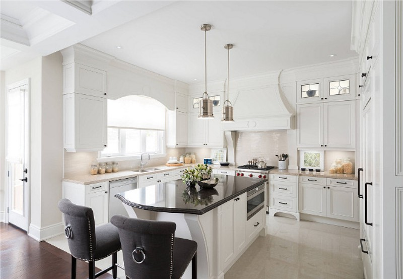
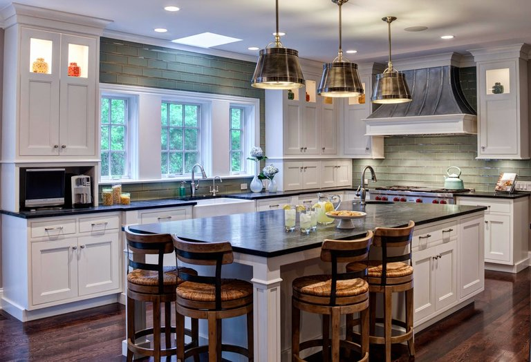

Кухня в американському стилі: розділяй і оформлюй
Дизайн інтер'єру кухні в американському стилі часто передбачає поділ простору за допомогою арок, барних стійок, перегородок і багаторівневих стель, а також за допомогою колірних контрастів.


Говорячи про доречних на кухні цього напрямку кольорах, тут скоріше переважає гамма нейтральних тонів. Яскраві відтінки зустрічаються досить рідко. Білий колір можна побачити на фасадах кухонних гарнітурів.
Щоб втілити ідею направлення, не обов'язково мати колосальний бюджет. Можна просто використовувати штучні матеріали. Якщо підібрати гарні імітації, кухня буде виглядати також розкішно, як і з дорогими матеріалами.
Зазвичай біля стіни розміщують кухонний гарнітур. Але, якщо простір дозволяє, можна розмістити робочу зону по центру. Зона з обідньою композицією знаходиться окремо. Розмежувати кухню на дві зони можна за допомогою барной стійки.
Кухня вітальня повинна мати центральну люстру, а також точкові світильники над робочою поверхнею. Не обійтися також без аксесуарів у вигляді штор, визнав з квітами, картин в дерев'яних рамках і текстильних елементів декору.